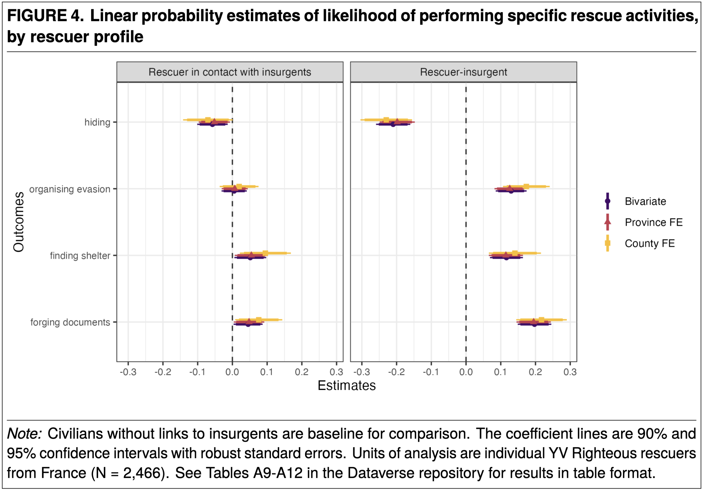
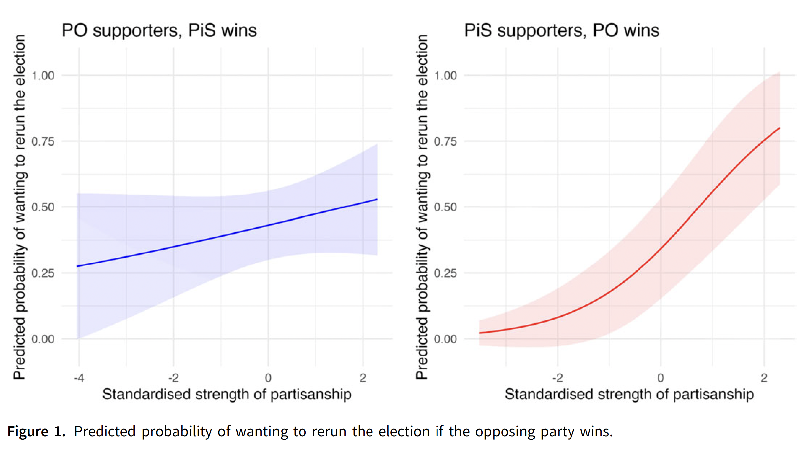

Allies of the Weak: La Résistance and Jews in the Holocaust (2025) American Political Science Review
 Do insurgents help or hinder survival of the targets of genocide? In the case of the Holocaust, many resistance movements across occupied Europe have been typically accused of not having helped their fellow Jewish citizens escape from genocide. In addition, a common view in political science holds that insurgents’ presence attracts state violence against civilians. In contrast to this, I use multiple archival collections on WWI and WWII military personnel, Holocaust victims’ records, and testimonies of survivors and rescuers to show that insurgent presence in fact decreased local numbers of Holocaust victims. To ensure that the relationship is causal, I use an instrumental variable exploiting the exogenous number of WWI military deaths, which increased insurgent enlistment in WWII. Case studies of mechanisms reveal that individual insurgents helped the Jews mainly out of "moral" motivations, by using tactics they had developed to fight the incumbent. By zooming out of times of increased counterinsurgency and studying the specific needs of genocide targets, this article nuances existing literature and points to an overlooked source of variation in genocide survival.
How Bad Can It Get? Polarization and the Public Interest When It Matters (2026) British Journal of Political Science (co-authored with Mark A. Kayser)
 Scholars and political observers, alike, have associated political polarization with the weakening of democratic norms and the undermining of accountability, as partisans trade off the public interest against in-group loyalty. We probe how in-group bias shapes support for collective goods in actual high-stakes settings in an especially polarized democracy. Conducting survey experiments in Poland, we examine two scenarios: electoral integrity during the 2023 parliamentary election that could have entrenched authoritarian rule and national security after Russia’s 2022 invasion of neighboring Ukraine. Our findings show pronounced partisan bias undermining support for electoral integrity---approximately 40 per cent of party supporters with an average level of partisanship supported rerunning an election when their party unexpectedly lost---but less bias in judgments about national security, raising the possibility that individuals may view democracy as more of an instrumental than an intrinsic good.
Extermination and Restraint: Spatial dynamics of anti-Jewish violence in 1941 (Conditionally accepted at the Holocaust and Genocide Studies)
 Who and when devised the Holocaust and determined its implementation? While historians broadly agree that the genocide of European Jewry originated before the Wannsee Conference in January 1942, the precise timing, authorship, and mechanism of its escalation remain disputed. This article systematically examines the geography and timing of anti-Jewish violence in 1941 across the occupied Soviet territories. Drawing on detailed microdata from Yahad–In Unum’s field interviews with eyewitnesses, I classify each instance of violence experienced by the Jews according to the magnitude, logic, and perpetrators. My novel dataset thus gathers information about 767,466 victims across 1,177 localities. Using spatial models and data visualisation, I find that later-occupied localities experienced a faster onset of group-destructive violence, with extermination converging in calendar time toward October 1941. However, strong and significant spatial dependence indicates that this acceleration was geographically uneven: neighbouring localities often followed opposite trajectories---one subjected to extermination, the other spared. Overall, 57 percent of occupied localities experienced genocidal violence in 1941, while as many as 43 percent did not. Differences are also found on the regional level: while early extermination predominated in Lithuania and Latvia Regions, large swaths of Białystok, Weissruthenien, Galicia and Volhynia-Podolia Regions did not experience extermination until after the Wannsee Conference. The findings support structuralist interpretations of the Holocaust and indicate that the uneven extermination observed throughout 1941 is most likely best explained by variation in local leadership initiative under the absence of a clear extermination order.
Who and when devised the Holocaust and determined its implementation? While historians broadly agree that the genocide of European Jewry originated before the Wannsee Conference in January 1942, the precise timing, authorship, and mechanism of its escalation remain disputed. This article systematically examines the geography and timing of anti-Jewish violence in 1941 across the occupied Soviet territories. Drawing on detailed microdata from Yahad–In Unum’s field interviews with eyewitnesses, I classify each instance of violence experienced by the Jews according to the magnitude, logic, and perpetrators. My novel dataset thus gathers information about 767,466 victims across 1,177 localities. Using spatial models and data visualisation, I find that later-occupied localities experienced a faster onset of group-destructive violence, with extermination converging in calendar time toward October 1941. However, strong and significant spatial dependence indicates that this acceleration was geographically uneven: neighbouring localities often followed opposite trajectories---one subjected to extermination, the other spared. Overall, 57 percent of occupied localities experienced genocidal violence in 1941, while as many as 43 percent did not. Differences are also found on the regional level: while early extermination predominated in Lithuania and Latvia Regions, large swaths of Białystok, Weissruthenien, Galicia and Volhynia-Podolia Regions did not experience extermination until after the Wannsee Conference. The findings support structuralist interpretations of the Holocaust and indicate that the uneven extermination observed throughout 1941 is most likely best explained by variation in local leadership initiative under the absence of a clear extermination order.